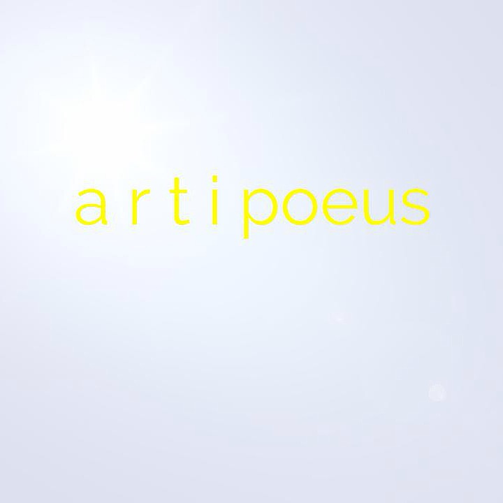

The platform for the homeless
In construction :-)
Homeless people come in many shapes and forms, those who want to live on the road for freedom and those
who want to leave it. Prana is a digital platform bridging the information gap between volunteers, organizations and the homeless, For the
resources and services they need. Such as sanitary and medical services, legal advice and so on. The platform also makes it
easier for people to become volunteers and set up their own projects, yet
the idea is still being modified and built.
Or write us a mail:
contact@prana-deutschland.de
Team members we are currently looking for:
Programmers for:
PHP, Javascript, HTML, css, Google API's
Civil Engineers/people interested for:
constructing our access points.
Translators for:
English, German, Turkish, Polish, Russian, Bulgarian & Ukrainian Mainly to
aid translations of government bureaucratic forms and technical translations (A.K.A Website) to the specified language.
Supporting partners:

Artipoeus: Cool art reviews you can listen to.
Prana-deutschland - copyright 2016